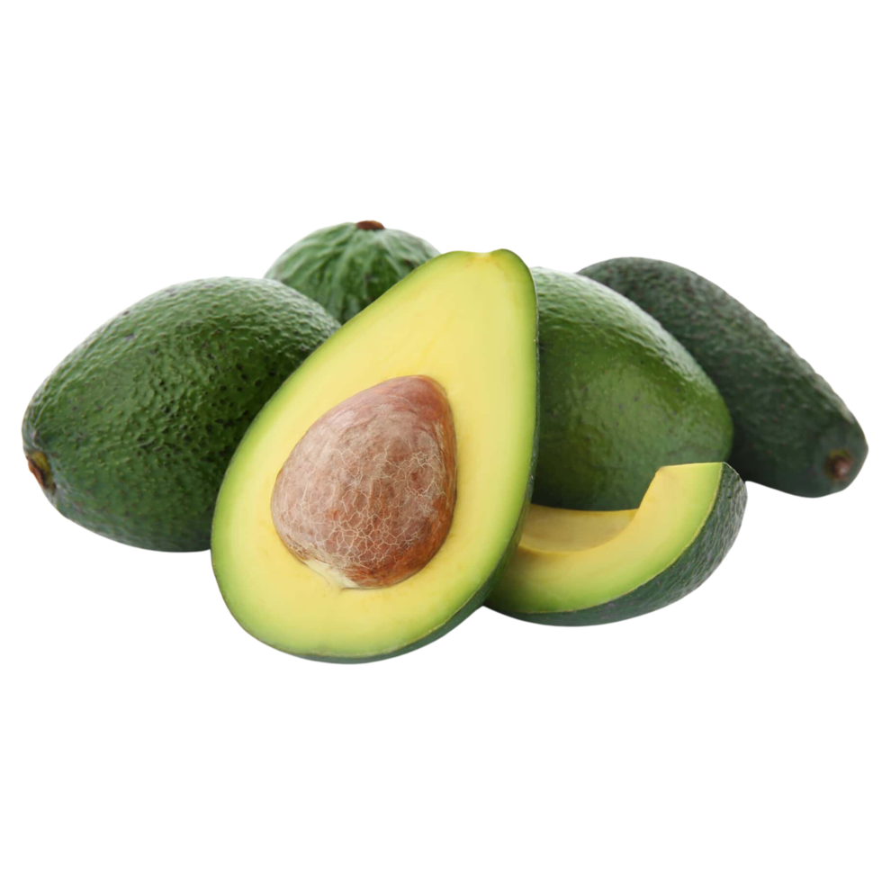

O abacate é originário de Puebla, no centro-sul do México. O consumo da fruta começou há cerca de 10.000 anos, e sua domesticação e cultivo há cerca de 5.000 anos. Durante sua longa história, o abacate ficou conhecido por diferentes nomes. Alguns deles são “fruta da fertilidade”, “pêra jacaré” e “fruta manteiga”
